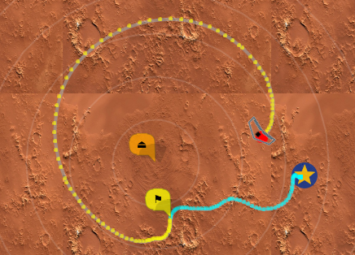

Anonymous Maps#
mwp provides a pseudo-map proxy that just gives you a black map (or user specified tile). This may be useful for a number of use-cases:
- privacy
- general obstinacy
- clarity of display
Building#
This proxy is not build by default, it is necessary to build, install and configure the proxy manually.
cd mwptools/qproxy
make bproxy
# copy bproxy somewhere on the PATH
cp bproxy ~/.local/bin/
# or
sudo cp broxy /usr/local/bin
# or
sudo cp broxy /usr/bin
Configuration#
That was the easy bit! Now it is necessary to tell mwp where to find the proxy. This involves a setting and a configuration file.
First of all, ensure that the map-sources setting is enabled:
$ gsettings get org.mwptools.planner map-sources
'sources.json'
# here this set to a file sources.json (in ~/.config/mwp/)
if this is not set, then set it:
$ gsettings set org.mwptools.planner map-sources 'sources.json'
Now we need to edit the file ~/.config/mwp/sources.json, there is a sample file in mwptools/samples/sources.json. you file needs a stanza like:
{
"id": "Black",
"name": "Black Tiles",
"license": "(c) jh ",
"license_uri": "http://daria.co.uk/",
"min_zoom": 0,
"max_zoom": 20,
"tile_size": 256,
"projection": "MERCATOR",
"spawn" : "bproxy",
}
So a minimal ~/.config/mwp/sources.json looks like:
{
"sources" : [
{
"id": "Black",
"name": "Black Tiles",
"license": "(c) jh ",
"license_uri": "http://daria.co.uk/",
"min_zoom": 0,
"max_zoom": 20,
"tile_size": 256,
"projection": "MERCATOR",
"spawn" : "bproxy",
}
]
}
On starting mwp you should see a new map option "Black Tiles".

Custom Tile#
It's also possible to have a custom tile (which does not have to be black). The tile must be:
- 256x256 pixels
- PNG
The full path is provided in the environment variable MWP_BLACK_TILE, e.g.
# put this in e.g. ~/.bashrc to make it permanent
export MWP_BLACK_TILE=~/.config/mwp/mytile.png
The environment variable may instead be added to ~/.config/mwp/cmdopts.
For example:
